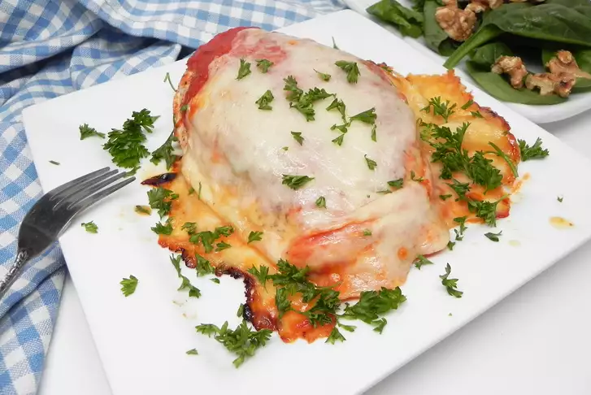

Chicken Parm

Description
This is my favorite dish in the world. Or, one of them, I should say. To me, there
are few things better than going to a new city on an empty stomach and sitting down to
some nice Chicken Parm after a long day.
I have very fond memories of eating Chicken Parm with my teammates after tournaments or
maybe even on just nights out. Even now, as I write this, my mouth waters! Ah, yes,
Chicken Parm.
Ingredients
- Cooking Spray
- 1 (16 ounce) package of skinless, boneless chicken breasts (such as Perdue)
- 4 slices of Fresh Mozzarella Cheese BC
- 2 cups tomato sauce, or to taste
Steps
- Preheat the oven to 375 degrees F (190 degrees C). Spray a baking pan with cooking spray. Place chicken on the prepared pan
- Bake in the preheated oven for 20 minutes, flipping chicken after 12 minutes. Remove from the oven, add desired amount of sauce, and top each breast with mozzarella cheese
- Bake until cheese is melted and chicken is no longer pink in the center and the juices run clear, about 12 more minutes. An instant-read thermometer inserted into the center should read at least 165 degrees F (74 degrees C).